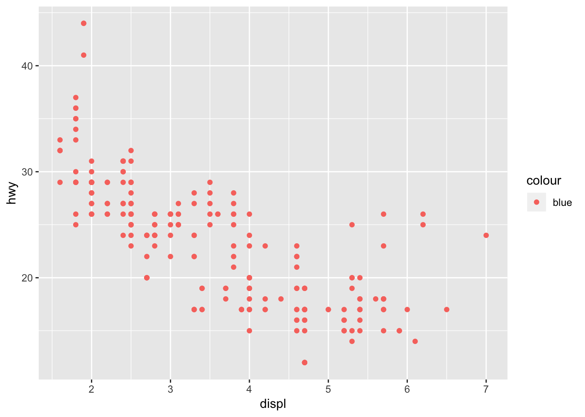
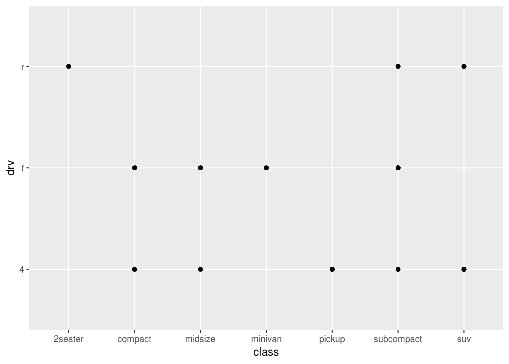
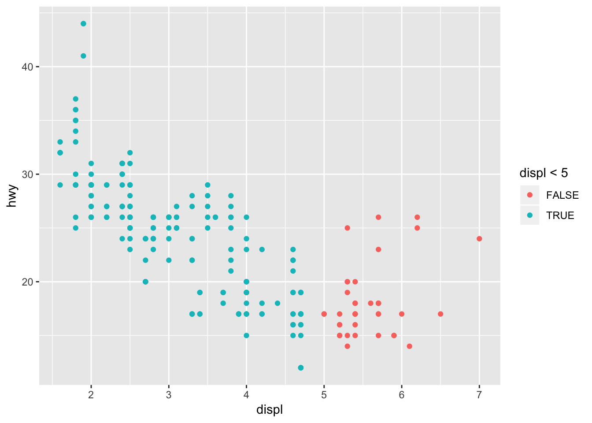
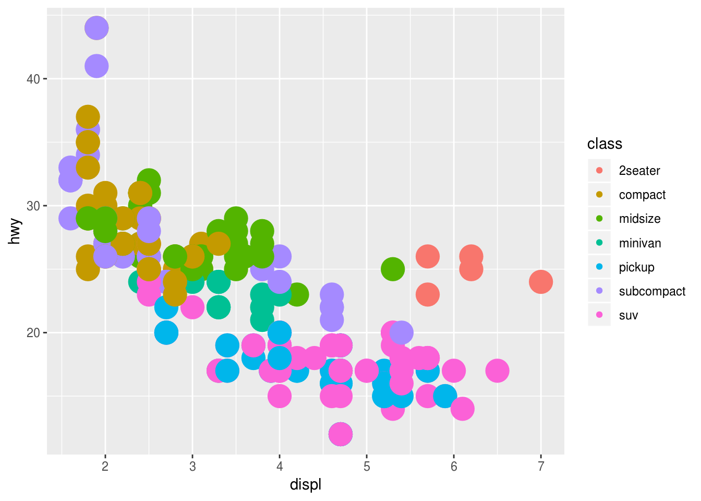
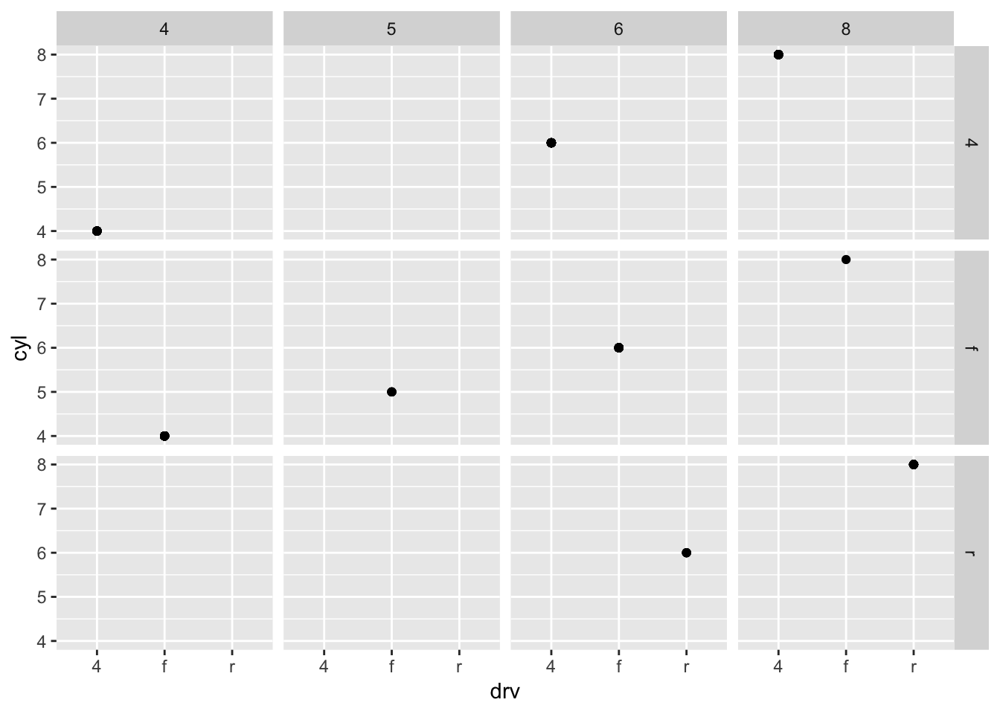
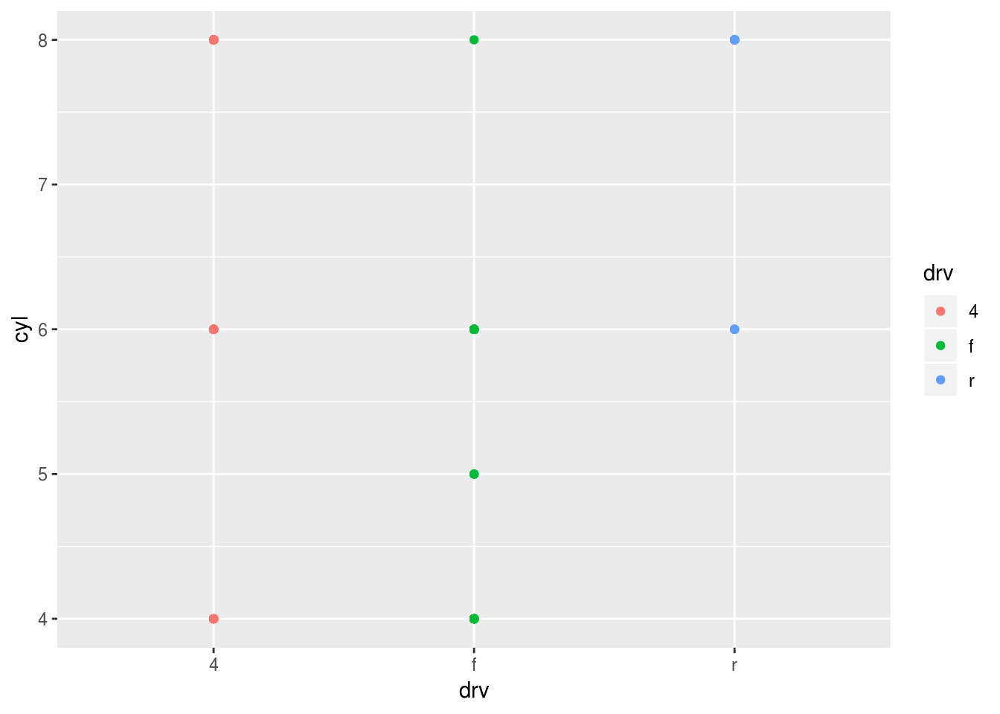
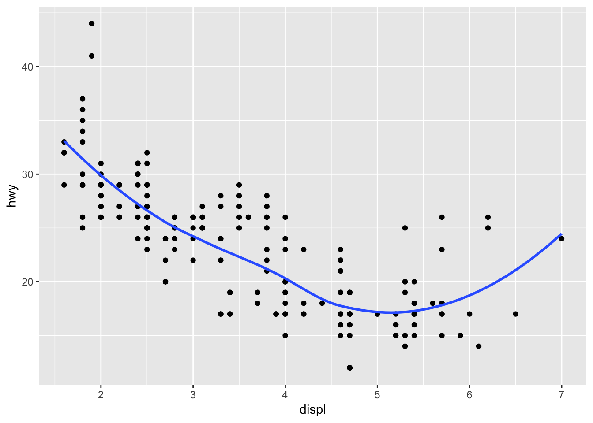

3 Data visualisation
3.2.4 Exercises
Run
ggplot(data = mpg). What do you see?ggplot(data = mpg)
empty graph, because we don’t set the aesthetic mapping for plot.
How many rows are in
mpg? How many columns?dim(mpg) ## [1] 234 11rows: 234, columns: 11
What does the
drvvariable describe? Read the help for?mpgto find out.?mpgdrv: f = front-wheel drive, r = rear wheel drive, 4 = 4wd
Make a scatterplot of
hwyvscyl.ggplot(mpg) + geom_point(aes(x = hwy, y = cyl))
What happens if you make a scatterplot of
classvsdrv? Why is the plot not useful?ggplot(mpg) + geom_point(aes(class, drv))
3.3.1 Exercises
What’s gone wrong with this code? Why are the points not blue?
ggplot(data = mpg) + geom_point(mapping = aes(x = displ, y = hwy, color = "blue"))
Need to put color attribute outside the aes()
Because the color argument was set within aes(), not geom_point()Which variables in
mpgare categorical? Which variables are continuous? (Hint: type?mpgto read the documentation for the dataset). How can you see this information when you runmpg?str(mpg) ## Classes 'tbl_df', 'tbl' and 'data.frame': 234 obs. of 11 variables: ## $ manufacturer: chr "audi" "audi" "audi" "audi" ... ## $ model : chr "a4" "a4" "a4" "a4" ... ## $ displ : num 1.8 1.8 2 2 2.8 2.8 3.1 1.8 1.8 2 ... ## $ year : int 1999 1999 2008 2008 1999 1999 2008 1999 1999 2008 ... ## $ cyl : int 4 4 4 4 6 6 6 4 4 4 ... ## $ trans : chr "auto(l5)" "manual(m5)" "manual(m6)" "auto(av)" ... ## $ drv : chr "f" "f" "f" "f" ... ## $ cty : int 18 21 20 21 16 18 18 18 16 20 ... ## $ hwy : int 29 29 31 30 26 26 27 26 25 28 ... ## $ fl : chr "p" "p" "p" "p" ... ## $ class : chr "compact" "compact" "compact" "compact" ...Categorical: manufacturer, model, trans, drv, fl, class
Continuous: displ, cyl, cty, hwyMap a continuous variable to
color,size, andshape. How do these aesthetics behave differently for categorical vs. continuous variables?color:
ggplot(mpg) + geom_point(aes(displ, hwy, color = cty))
shape:
ggplot(mpg) + geom_point(aes(displ, hwy, shape = cty)) ## Error: A continuous variable can not be mapped to shapesize:
ggplot(mpg) + geom_point(aes(displ, hwy, size = cty))
What happens if you map the same variable to multiple aesthetics?
ggplot(mpg) + geom_point(aes(displ, hwy, color = manufacturer, size = manufacturer))## Warning: Using size for a discrete variable is not advised.What does the
strokeaesthetic do? What shapes does it work with? (Hint: use?geom_point)To modify the width of the border
ggplot(mpg) + geom_point(aes(displ, hwy, color = class, stroke = 5))What happens if you map an aesthetic to something other than a variable name, like
aes(colour = displ < 5)? Note, you’ll also need to specify x and y.ggplot(mpg) + geom_point(aes(displ, hwy, color = displ < 5))
3.5.1 Exercises
What happens if you facet on a continuous variable?
ggplot(data = mpg) + geom_point(mapping = aes(x = drv, y = cyl)) + facet_wrap(~ displ)Your graph will not make much sense. R will try to draw a separate facet for each unique value of the continuous variable. If you have too many unique values, you may crash R.
What do the empty cells in plot with
facet_grid(drv ~ cyl)mean? How do they relate to this plot?ggplot(data = mpg) + geom_point(mapping = aes(x = drv, y = cyl))ggplot(data = mpg) + geom_point(mapping = aes(x = drv, y = cyl)) + facet_grid(drv ~ cyl)
ggplot(data = mpg) + geom_point(mapping = aes(x = drv, y = cyl, color = drv))
empty cells mean that there are no relation between drv and cyl. no 4 cylinders with rear wheel drive
What plots does the following code make? What does . do?
ggplot(data = mpg) + geom_point(mapping = aes(x = displ, y = hwy)) + facet_grid(drv ~ .) ggplot(data = mpg) + geom_point(mapping = aes(x = displ, y = hwy)) + facet_grid(. ~ cyl)

Display the plot on the horizontal and/or vertical direction . acts a placeholder for no variable
Take the first faceted plot in this section:
ggplot(data = mpg) + geom_point(mapping = aes(x = displ, y = hwy)) + facet_wrap(~ class, nrow = 2)What are the advantages to using faceting instead of the colour aesthetic?
Faceting splits the data into separate grids and better visualizes trends within each individual facet.
What are the disadvantages?
disadvantage is that by doing so, it is harder to visualize the overall relationship across facets.
How might the balance change if you had a larger dataset?
The color aesthetic is fine when your dataset is small, but with larger datasets points may begin to overlap with one another. In this situation with a colored plot, jittering may not be sufficient because of the additional color aesthetic.
Read
?facet_wrap. What doesnrowdo? What doesncoldo?nrow and ncol will show the row numbers and column numbers in the split plot
What other options control the layout of the individual panels?
as.table determines the starting facet to begin filling the plot, and dir determines the starting direction for filling in the plot (horizontal or vertical).
Why doesn’t
facet_grid()havenrowandncolarguments?
When using
facet_grid()you should usually put the variable with more unique levels in the columns. Why?This will extend the plot vertically, where you typically have more viewing space. If you extend it horizontally, the plot will be compressed and harder to view.